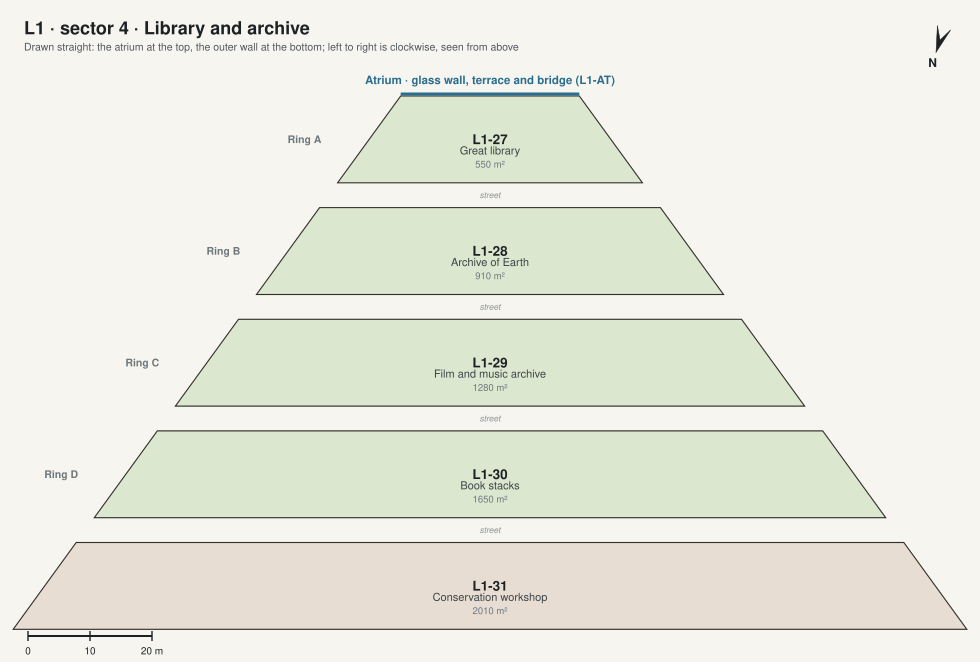

L1 · sector 4 · Library and archive

| Code | Room | What it is for | Also | Size | Two of a kind |
|---|---|---|---|---|---|
| L1-27 | Great library ◉ 360° | The house's main collection, two storeys of books, read at long tables by the atrium glass. | Talks and readings when visitors come. | 550 m² | C-24 Library |
| L1-28 | Archive of Earth | Earth's history and culture, and family records, to read and to look at. | Its sealed copy is in the vault (L5-11). | 910 m² | |
| L1-29 | Film and music archive | Films and recordings, with booths to watch and listen. | Feeds the cinema (L1-17) and the music room (L1-01). | 1280 m² | |
| L1-30 | Book stacks | Robotic stacks that bring any book to the library or to any room. | 1650 m² | ||
| L1-31 | Conservation workshop | Repairing, scanning and printing books; the library's stores. | 2010 m² |